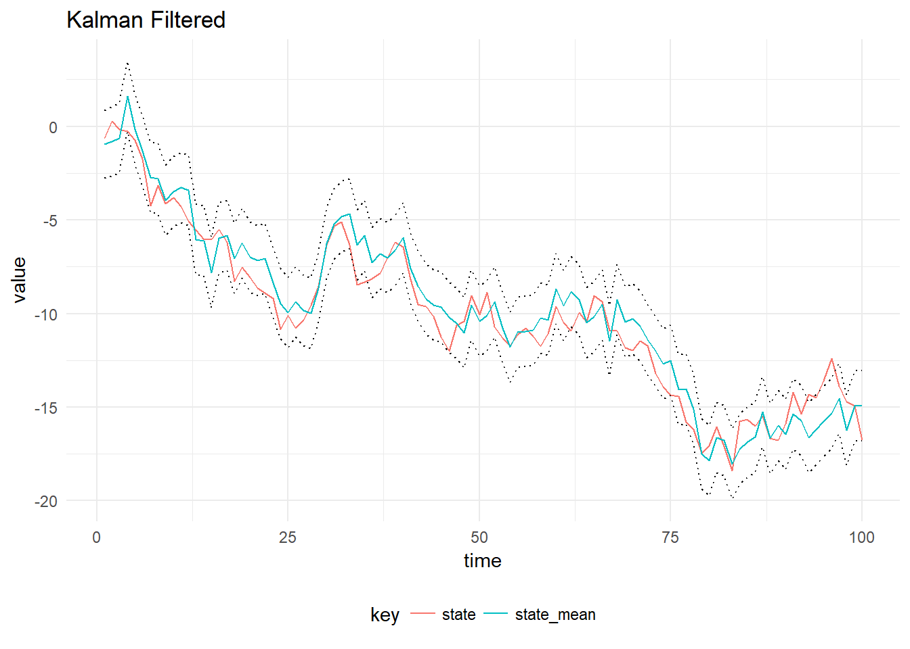

Dynamic Linear Models have a linear Gaussian latent-state and observation model which is amenable to exact filtering because of special properties of the Gaussian distribution. This means the distribution of the latent-state (\(p(\textbf{x}_{0:T}|y_{1:T}, \theta)\)) can be learned about exactly, this distribution is commonly called the filtering distribution. Suppose a time-dependent process is observed discretely at times \(t = 1,\dots,T\), then a general DLM for this process can be written as:
\[\begin{aligned} y_t &= F_t x_t + v_t, &v_t &\sim \mathcal{N}(0, V), \\ x_t &= G_t x_{t-1} + v_t, &w_t &\sim \mathcal{N}(0, W), \\ x_0 &\sim \mathcal{N}(m_0, C_0). \end{aligned}\]
The latent-state forms a Markov Chain, \(p(x_t|x_{0:t-1},W) = p(x_t|x_{t-1},W)\) and the observations are conditionally independent given the corresponding value of the latent-state. The matrix \(F_t\) is known as the observation matrix, the matrix \(G_t\) is the state evolution matrix. \(V\) is the measurement variance and \(W\) is the system evolution noise.
The Kalman filter proceeds as follows, given observations of the process up until time \(t\), \(y_{1:t}\) and the posterior of the latent-state at time \(t\), then:
Prior at time \(t + 1\) is \(\mathcal{N}(a_t, R_t)\) where \(a_t = G_t m_t\) and \(R_t = G_t C_t G_t^T + W_t\)
One step prediction for time \(t + 1\) is \(\mathcal{N}(f_t, Q_t)\) where \(f_t = F_t a_t\) and \(Q_t = F_t R_t F_t^T + V_t\)
State update given the new observation, \(y_{t+1}\) is \(\mathcal{N}(m_{t+1}, C_{t+1})\) where \(m_{t+1} = a_t + K_t e_t\), \(C_t = (I - K_t * F_t)R_t(I - K_t * F_t) + K_tV_tK_t\) and \(K_t = R_t * F_t^T * Q^{-1}\), \(e_t = y_t - f_t\)
In order to illustrate the Kalman Filter implementation in Scala, we consider a first order polynomial DLM, where \(F_t = 1\), \(G_t = 1\) and the latent-state is one-dimensional:
scala> import dlm.model._
import dlm.model._
scala> import breeze.linalg.{DenseMatrix, DenseVector, diag}
import breeze.linalg.{DenseMatrix, DenseVector, diag}
scala> val mod = Dlm.polynomial(1)
mod: dlm.model.Dlm.Model = Model(<function1>,<function1>)
scala> val p = Dlm.Parameters(
| v = DenseMatrix(3.0),
| w = DenseMatrix(1.0),
| m0 = DenseVector(0.0),
| c0 = DenseMatrix(1.0)
| )
p: dlm.model.Dlm.Parameters = Parameters(3.0 ,1.0 ,DenseVector(0.0),1.0 )
scala> val data = Dlm.simulateRegular(0, mod, p).
| steps.
| take(1000).
| toArray
data: Array[(dlm.model.Data, breeze.linalg.DenseVector[Double])] = Array((Data(1.0,Some(DenseVector(-0.11136892584384568))),DenseVector(-0.035918218458410284)), (Data(2.0,Some(DenseVector(-1.2065237462383718))),DenseVector(-0.7907396823307755)), (Data(3.0,Some(DenseVector(-1.8853201693068888))),DenseVector(-1.9967516056322119)), (Data(4.0,Some(DenseVector(-2.8662785971449303))),DenseVector(-3.1053479249392035)), (Data(5.0,Some(DenseVector(-3.6540690080718035))),DenseVector(-3.1122712879208114)), (Data(6.0,Some(DenseVector(-1.4605833269153257))),DenseVector(-4.3135190211960275)), (Data(7.0,Some(DenseVector(-3.231441446771772))),DenseVector(-4.404291989428861)), (Data(8.0,Some(DenseVector(-1.5499541617623285))),DenseVector(-3.6198751753109146)), (Data(9.0,Some(DenseVector(-0.6157526250278...KalmanFilter object as advanceStateval mt = // posterior mean of latent-state at time t
val ct = // posterior covariance of latent-state at time t
val time = t
val (at, rt) = KalmanFilter.advanceState(mod.g, mt, ct, time, p.w)KalmanFilter object as oneStepPredictionval (ft, qt) = KalmanFilter.oneStepPrediction(mod.f, at, rt, time, p.v)KalmanFilter object as updateStateval y = Data(t + 1, Some(DenseVector(5.0))) // an observation at time t + 1
val (mt1, ct1) = KalmanFilter.updateState(mod.f, at, rt, ft, qt, y, p.v)These three steps are implemented together into a single function stepKalmanFilter. This function is then used to fold over an Array[Data] to determine the filtering distribution:
scala> val filtered = KalmanFilter.filter(mod, data.map(_._1), p)
filtered: Array[dlm.model.KalmanFilter.State] = Array(State(0.0,DenseVector(0.0),1.0 ,DenseVector(0.0),1.0 ,None,None,0.0), State(1.0,DenseVector(-0.04454757033753828),1.2000000000000002 ,DenseVector(0.0),2.0 ,Some(DenseVector(0.0)),Some(5.0 ),-1.724897793186084), State(2.0,DenseVector(-0.5361528755263525),1.2692307692307692 ,DenseVector(-0.04454757033753828),2.2 ,Some(DenseVector(-0.04454757033753828)),Some(5.2 ),-3.597991469315325), State(3.0,DenseVector(-1.1171811261325688),1.2919708029197077 ,DenseVector(-0.5361528755263525),2.269230769230769 ,Some(DenseVector(-0.5361528755263525)),Some(5.269230769230769 ),-5.520596875444431), State(4.0,DenseVector(-1.8747212721986122),1.2993103448275862 ,DenseVector(-1.1171811261325688),2.2919708029197077 ,Some(DenseVector(-1.117181126...The result of filtering the simulated observations is plotted below, with 90% probability intervals. The system and observation variances, \(W_t\) and \(V_t\) are assumed to be constant in time and known.
